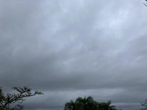
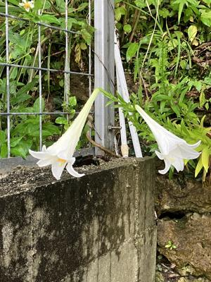

うるがいの話 ある日
最新: 船の運転は難しい【うるがいの話 ある日】とは 一日だけのプログです
『うるがいの話』の最新一日だけのプログで、通信料が少なく経済的だ。カニの画像をクリックすると全ての日付が載る『うるがいの話』サイトを表示します
|
|
【うるがいの話】 うるがい(ｳﾙｶﾞｲ urugai)とは、『もずくがに』の名前でとても大きくなります。 |
|---|---|
|
|
【カミマヤーの話】 猫のことを方言でマヤーといいます。カミマヤー（kamimayaa）とは、神の猫のことです。 |
|
【たながぁの音楽】 たながぁ（ﾀﾅｶﾞｰ tanagaa）とは手長えびのことで、何種類かあり大きいのは車 エビぐらいになります。 |

|
【ぶながぁの話】 ぶながぁ(ﾌﾞﾅｶﾞｰ bunagaa)とは、赤い髪の毛、赤い身体、そして身長は１ｍ２０ｃｍ ぐらい、川の蟹を食べているの目撃された。場所は沖縄県国頭郡大宜味村のと ある村僕の隣近所に住んでいる爺さんから、聞いた話です。 |
|
|
【ギーマの話】 ギーマ(giima)とは、山原の里山に咲くスズランに似た、 花を付けます。実は食べられます、 気が付くと口の周りが紫になっています。 |
2026年05月09日 (土）船の運転は難しい
16:41

高速ジェット船「つむぎ」は就航翌日の５月２日、久米島の港で
海底に接触する事故を起こしていましたが、運営会社が再発防止
策をとりまとめ安全が確認されたとしてきょう運航（５月９日）
を再開しました。
船の運転を、時々父親から任された。車と違って、船は直ぐには
止まらない！。家には、サバニと平底（フラットボトム）のボー
トがありました。サンゴ礁の、上を通る漁の場合は平底のボート
を、利用していました。モーターも、サンゴ礁にぶつかるとスク
リューが、跳ね上がり故障しないようになっていました。ま、レ
ベルは同じでないでしょうが。
一度は行ってみたいと思っていた久米島、高速ジェット船の就航
のニュースで、これだと思った矢先だった。ま、運行できて良か
った。

話しは変わり、久米島出身のオオミさんという入社同級生が、２
月に亡くなったオカさんの代わりに、４月に会社代表になってい
た。フムフム、写真、かなり若い時のものだぜ。